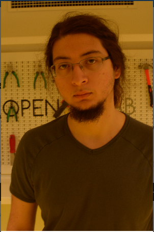

Bugra Önal
Cellph: +90 532-272-7232
Acarkent 54. Sk. B821, Beykoz, Istanbul 34800, Turkey
onalbugra@gmail.com · https://www.linkedin.com/in/bugra-onal-a00492b9/
Experience in SoC and FPGA development and verification · RTL design with Verilog and VHDL · Proficient in Modelsim, Verilator Xilinx tools (ISE, Vivado, Vivado HLS, Vivado SDK) · Coding skills in C, modern C++, Python, Java, MATLAB, UNIX scripting, Qt Framework · Experience in Raspberry Pi development, OpenCV, Boost, Django libraries · TAship experience
PhD in CSE, September 2021 - Present, University of California Santa Cruz, Santa Cruz, USA
MS in EE, September 2019 - Present, Özyegin University, Istanbul, Turkey (GPA: 3.88/4.00)
Thesis involves implementing an area efficient static memory allocation/synthesis method within a compiler of a synthesized soft-core CPU. Funded by TÜBITAK.
BS in EE & CS (double major), August 2019, Özyegin University, Istanbul, Turkey (GPA: 3.56/4.00)
Senior Project on Parametrized FPGA Video Flow Design.
TA‘ed the following courses: Python for Engineers, Digital Electronics and FPGA Design, Computer Architecture
Developed FPGA IPs for Electric Motor Drives. Did RTL design, verification, and synthesis. Also helped other team members in bring-up.
Implemented “Limit Order Book” algorithms on FPGA using High Level Synthesis as part of a High Frequency Trading (HFT) hardware/software solution.
Worked in tandem with the company for my senior project on parametrized video flow algorithm implementations on FPGA.
Static Memory Allocation for a Synthesized Soft-Core CPU (April 2020 - Present): Improving a Clang based C compiler for a custom CPU called VerySimpleCPU (VSCPU). This project is funded by TÜBITAK (Turkish NSF). VSCPU was designed by Prof. H. Fatih Ugurdag's team. It has a small instruction set, which has "instruction set completeness". The improvement to the compiler involves adding a static memory allocation instead of emulating a stack. Since VSCPU does not have stack-based instructions, a statically memory mapped application has smaller program and data memory footprint.
Virtual FPGA Board (September 2020 - Present): An FPGA board simulator intended to be used in distance education, developed using Verilator. A GUI was designed using Qt framework. The GUI replicates a typical FPGA board with virtual LEDs, push buttons, switches, and a seven-segment display. The GUI and the Verilator model communicate through UDP packets.
High Frequency Electric Motor Control IP (August 2019 - Present): The IP controls BLDC motors on Xilinx Zynq SoCs. This project was funded by TÜBITAK. Designed RTL modules running on Zynq PL. Conducted component level simulation tests and system level FPGA-in-the-Loop verification in MATLAB. Wrote a software for monitoring/controlling the motors, running on the Zynq PS. Developed Qt based desktop application, communicating with the Zynq FPGA.
Automatic Door Locking System (February 2020 - June 2020): A web application with scheduled and on-request locking/unlocking system using a Raspberry Pi. The application supports a calendar view showing the schedule of a door. The app. supports multiple doors. The doors can be opened manually utilizing face recognition or automatically when the scheduled time arrives. The app. utilizes a database for keeping track of the schedules and users.
High Frequency Trading on FPGA using HLS (July 2019 - August 2019): This is an implementation of the “Limit Order Book” algorithm for HFT on an FPGA equipped NIC using HLS. The program using Xilinx Vivado HLS. The algorithm utilizes a heap structure for keeping track of orders. Buyer and seller orders are matched as fast as possible according to their prices.
Parametrized FPGA Video Flow (September 2018 - June 2019): A set of parametrized video processing algorithms implemented on an FPGA. The algorithms include histogram equalization, median filter, and fish-eye lens distortion correction. Project was done in cooperation with Yonga Technology Microelectronics R&D and Prof. H. Fatih Ugurdag.
Laser Object Tracking (February 2018 - June 2018): A Raspberry Pi application that tracks an object and points a laser pointer at it. The project utilized OpenCV library and was written in Python.
B. Tufekci, B. Onal, H. Dere, and H. F. Ugurdag, " Hardware Implementation of Field Oriented Control for Three Phase Machine Drives," 28th IEEE Signal Processing and Communications Applications Conference (SIU), Gaziantep, Turkey, October 2020.
B. Tufekci, B. Onal, H. Dere, and H. F. Ugurdag, "Efficient FPGA Implementation of Field Oriented Control for 3-Phase Machine Drives," 18th IEEE East-West Design & Test Symposium (EWDTS), Varna, Bulgaria, September 2020.
Ranked 3rd in IEEEXtreme 14.0 programming competition (October 2020) among contestants from Turkey
TOEFL iBT score of 111 out of 120 (August 2019)
Top ranking student in the class of 2019 within BSEE and BSCS majors
Ranked 9th in IEEEXtreme 12.0 programming competition (October 2018) among contestants from Turkey